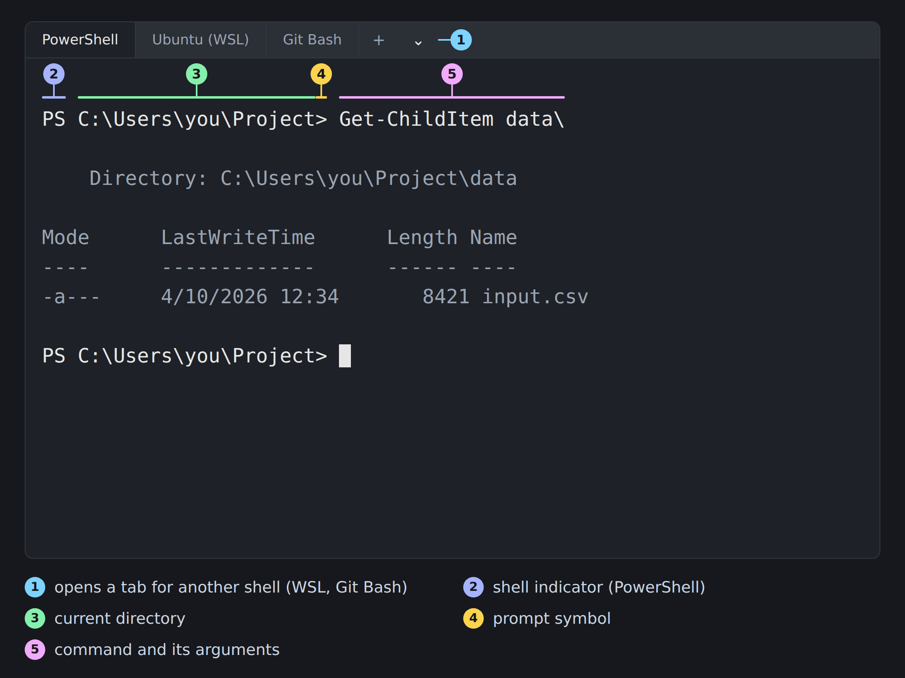
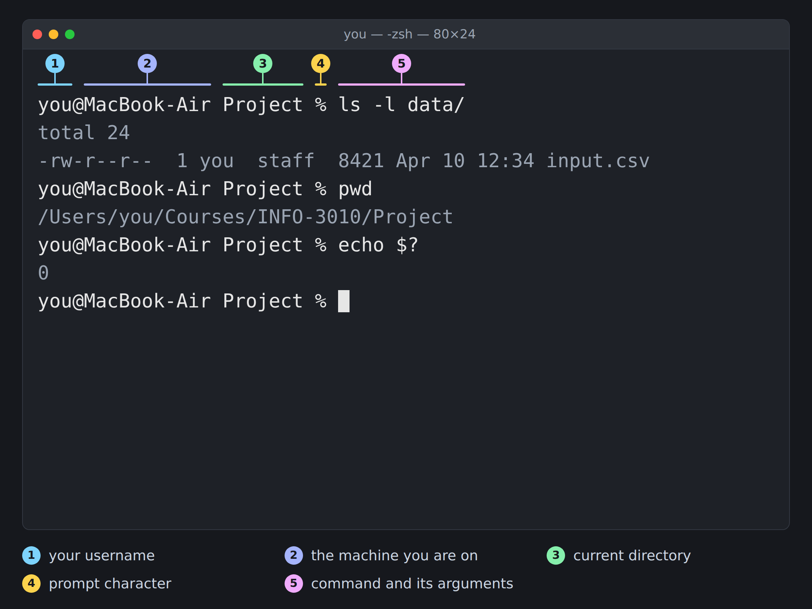

11 Command Line
Prerequisites (read first if unfamiliar): Chapter 9, Chapter 10.
See also: Chapter 12, Chapter 31, Chapter 33.
Purpose
The lab instructions say “open a terminal and run pip install pandas,” as if that were one small step. You find something called Terminal, and it opens a nearly empty window with a line ending in % or $ and a blinking cursor. No buttons, no menus, no hint of what you’re allowed to type. You paste the command, a wall of text scrolls past, and you can’t tell whether it worked.
If that’s where you are, you’re in good company: nearly everyone who uses the command line fluently started out just as lost. It is strange. It looks like a relic from the 1970s (parts of it are), it assumes vocabulary nobody taught you, and it does exactly what you type, destructive things included, without asking “are you sure?” That’s why it’s fast and precise, and also why it can delete an afternoon of work in half a second. A small set of habits makes it both comfortable and safe, and those habits are what this chapter teaches.
The chapter focuses on Unix-like shells: macOS Terminal, Linux, and on Windows either WSL or Git Bash. The first section tells Windows readers how to get one of those, and how the big ideas map onto PowerShell. From there you’ll learn to get around, inspect, copy, move, and delete files without accidents, chain small commands together, make sense of PATH and permissions, and read the error messages that stop most beginners. Shell scripting in depth is left to Chapter 33, editors to Chapter 12, other machines to Chapter 13, and the file-system ideas underneath it all to Chapter 10.
Why read this chapter
- Your instructor said “just open a terminal and run this,” and you’re staring at a blinking cursor with no idea whether you’re in the right window, let alone the right folder.
- You pasted
ls -lafrom a tutorial into your Windows laptop and got red text aboutGet-ChildItemand a parameter namedla. - You typed
pythonand gotcommand not found, even though you’re sure you installed Python last week. - Your script says
No such file or directoryabout a file you can see right there in Finder or File Explorer. - You hit
Permission denied, a forum told you to putsudoin front, and you’d like to know what you just did before you do it again. - You want to know what
rm -rfactually does before a pasted command does it to your homework. - You have a CSV too big for Excel to open comfortably, and you’d like to see its first rows and count its lines in seconds.
- People keep saying “pipe it to grep” and “check your PATH,” and you’d like those phrases to mean something.
Running theme: see before you act
The shell trades safety for speed: one command can move, overwrite, or delete more work than an afternoon of clicking, and almost every command-line disaster could have been stopped by a pwd, an ls, or a quick preview before the destructive command ran.
11.1 A beginner mental model
None of this vocabulary will stick until you have a terminal open in front of you, so start there and read the rest with a prompt blinking on your screen.
Opening a terminal
On a Mac, the terminal is already installed. Press ⌘ + Space, type terminal, and press Enter, or find it in Applications → Utilities → Terminal (Apple’s Terminal User Guide covers the app). Since macOS Catalina (10.15), the default shell is zsh, though an account carried over from an older Mac may still use bash. This chapter works as written in either.
On Windows, there are several terminals and several shells, and which combination you pick decides whether this chapter’s commands work as printed. Windows 11 comes with Windows Terminal (press the Windows key, type terminal, press Enter); on Windows 10, install it free from the Microsoft Store. Here’s the part that trips people up: Windows Terminal is a window that hosts other shells in tabs, and the ˅ beside the new-tab button lists every shell it found. What opens by default is PowerShell, a capable shell with its own command names (Get-ChildItem where this chapter says ls). Some Unix names work there as aliases, but many of this chapter’s examples won’t. To follow along as written, open one of these instead:
- Git Bash. If you’ve installed Git for Windows (see Chapter 31), you already have it: press the Windows key and type
git bash. It installs in minutes and runs most of this chapter as written, which makes it the easiest route on a school-managed laptop where you can’t turn on WSL. - WSL (Windows Subsystem for Linux). The best long-term option. Open PowerShell as administrator, run
wsl --install, and restart. You get a real Ubuntu system alongside Windows, as its own tab in Windows Terminal, where every command in this chapter runs exactly as printed. - Anaconda Prompt. If you installed Anaconda or Miniconda (see Chapter 14), the Anaconda Prompt is where
conda activateworks without extra setup. Its file commands are Windows ones rather than Unix ones, so use it for environment work and one of the two above for everything else.
Figure 11.1 shows where those tabs live and what the PowerShell prompt looks like when you land in it.

Get-ChildItem data\' and a directory listing of input.csv. Numbered callouts label the dropdown that opens another shell, the PS shell indicator, the current directory, the greater-than prompt symbol, and the command with its arguments.">On Linux, Ctrl + Alt + T opens a terminal on most desktops, or search your applications menu for “Terminal.” You’re already in a Unix shell, so nothing needs translating. The table sums it up.
| Where you are | How to open it | What you get |
|---|---|---|
| macOS | ⌘ + Space, type terminal |
zsh (or bash); works as written |
| Windows | Start, type terminal |
PowerShell; many examples need translating |
| Windows | Start, type git bash |
bash; works as written |
| Windows | wsl --install, then a WSL tab |
bash; works as written |
| Linux | Ctrl + Alt + T |
bash (or zsh); works as written |
To check what kind of shell you’re in, run echo $SHELL, which prints your default shell. Something ending in zsh or bash means you’re in a Unix shell and ready to go. An empty line almost certainly means PowerShell, and $SHELL printed right back at you means the old Command Prompt. Open a Git Bash or WSL tab, or translate as you go, since PowerShell has most of the same ideas under different names. cd works, pwd is an alias for Get-Location, ls and dir both run Get-ChildItem (Microsoft keeps a table of these aliases), and Get-Help replaces man and --help. Pipes (|) exist too, but they pass objects rather than text, so recipes that pipe into grep or wc need rewriting.
You’ll open a terminal hundreds of times this semester, so pin it now: right-click its icon in the macOS Dock and choose Options → Keep in Dock, or right-click it on the Windows taskbar and choose Pin to taskbar.
Terminal, shell, and command
People use “terminal” and “shell” as if they meant the same thing, which gets confusing when documentation treats them as different. They are. The terminal (technically a terminal emulator) is the application window you type in: Terminal.app on macOS, Windows Terminal, GNOME Terminal or Konsole on Linux. It handles fonts, colors, and key presses. The shell is the program running inside that window that actually interprets what you type: usually bash or zsh on macOS and Linux, and PowerShell or cmd.exe on Windows. A command is what you ask the shell to run: a program name followed by some arguments, like ls -l data/.
When you press Enter, a short sequence happens, and every error message you’ll meet comes from one of its steps. The shell reads the line you typed. It expands any shortcuts you used: patterns like *.csv, variables like $HOME, and command substitutions like $(date). It looks for the program you named in a list of folders called PATH. It starts that program, hands it your arguments, and shows you whatever the program prints. When the program finishes, it hands back a small number called an exit code: 0 means “everything worked,” and anything else means “something went wrong.” Then the shell shows a fresh prompt and waits.
$ ls -l data/ # 1. read the line
# 2. expand any shortcuts (none here)
# 3. find 'ls' on PATH
# 4. run it with the argument 'data/'
# 5. print output, return exit code 0
total 24
-rw-r--r-- 1 you staff 8421 Apr 10 12:34 input.csv
$ echo $? # the exit code of the previous command
0Every prompt you meet is built from the same few pieces, even when the details differ between machines (Figure 11.2).

Why bother, when the GUI is right there
Finder and File Explorer work, and they don’t make you memorize anything. The command line earns its place by doing four things they can’t. It’s fast for repetitive work: moving fifty PDFs into a readings/ folder is mv *.pdf readings/ at the prompt, and a lot of careful dragging in the GUI. It’s composable, in the spirit of the Unix philosophy: small tools that each do one job, joined with pipes, add up to far more than a panel of single-purpose buttons. It’s automatable, because anything you can type once you can save in a script and run again next week. And it’s remote-friendly: it’s how you do real work on a server you’ll never see in person (see Chapter 13). MIT’s Missing Semester course makes the same case, and its first lecture is a good companion to this chapter.
11.2 Orientation and safety first
The most useful habit at the command line is always knowing where you are, because every command you run acts on somewhere. Three commands give you the answer at any time: pwd (“print working directory”) shows where you are, ls lists what’s there, and cd moves you somewhere else. Before you do anything that touches files, run pwd and ls and check that the world is what you think it is.
$ pwd
/Users/you/Courses/INFO-3010/Project
$ ls
README.md data notebooks src
$ cd data
$ pwd
/Users/you/Courses/INFO-3010/Project/dataThat habit belongs to a larger mindset you could call guardrails first. When you aren’t sure what a command will do, reach for the read-only ones (pwd, ls, cat, head, wc, file) before anything that changes files. Before you delete or move files, list them, so you see exactly what’s about to be affected. When you could copy instead of move, copy; when you could move something aside instead of deleting it, do that. None of this costs anything, and together these habits head off almost every mistake you can’t undo.
# Preview before destructive action: list, then act
$ ls *.tmp # see exactly what *.tmp matches
file1.tmp file2.tmp notes.tmp
$ rm *.tmp # only after the listing looked rightOnly a few mistakes are worth being paranoid about, and each gets its own section later: deleting the wrong thing (especially with rm -rf), running a command in the wrong folder because you forgot to cd, overwriting a file with redirection (python script.py > results.csv silently replaces any existing results.csv), and reflexive sudo to “fix” a permission problem you don’t understand yet. Each has cost real students real assignments, and each is prevented by pausing for one extra second.
11.3 Command anatomy and help
Commands, options, and arguments
Nearly every command has the same shape, and once you see it, new commands stop looking like line noise:
command [options] [arguments]The command is the program’s name. Options (also called flags or switches) change how it behaves: quiet or chatty, recursive or not, which output format to use. Arguments are the things it acts on, usually files or folders. Square brackets are documentation shorthand for “optional.” So ls -la ~/Courses says “run ls, with options -l and -a, on ~/Courses,” and when a tool’s help says Usage: ls [OPTION]... [FILE]..., it’s telling you options come first, files after, and both can repeat. Once you can read that line, you can pick up a new command from its help page in a minute or two.
Options come in two styles. Short flags are a dash and one letter, like ls -l or grep -i, and they can usually be bundled: ls -l -a -h is the same as ls -lah, which is where most of the terse commands in tutorials come from. Long flags are two dashes and a word, like ls --all or grep --ignore-case. They take more typing but explain themselves, so they’re the better choice in scripts someone else (or future you) will read.
Some options take a value, which usually follows a short flag after a space and is often joined to a long flag with =. When you’re not sure which form a tool wants, its help tells you.
ls -lah # three short flags bundled
sort -o sorted.txt names.txt # short flag with a value
sort --output=sorted.txt names.txt # the same, as a long flag
curl -o page.html https://example.com # short flag with a value
curl --output page.html https://example.com # long flag, space formBuilt-in help
Every Unix system comes with two kinds of help. Reach for them before a web search, because they describe the exact version on your machine.
ls --help # quick summary, usually one screen
man ls # the full manual pageThe --help flag is the quick version: a usage line and a list of options, right for “I know this command, I just forgot the flag.” The man command opens the full manual in a pager. You scroll with the arrow keys, search with / followed by a word, and quit with q.
Here’s a snag that confuses a lot of Mac users. Linux gets its basic commands from GNU coreutils, which all understand --help. macOS uses BSD versions of the same commands, and many of them don’t: ls --help on a Mac complains about an “unrecognized option” and prints a terse usage line. You didn’t do anything wrong. On a Mac, man is the reliable way in, and now and then a flag differs from the Linux one a tutorial shows.
Man pages look dense, but they follow the same order every time, so skim rather than read. Start at SYNOPSIS, the summary of what the command accepts, then search for the flag you care about. Many pages end with EXAMPLES, often the fastest answer to “how do I use this at all?”
$ tar --help | head -20 # quick summary, first 20 lines
$ man tar # open the manual, then inside it:
/-x # jump to the -x option
/EXAMPLES # jump to the examples section
q # quitQuoting and spaces
Spaces on a command line are how the shell decides where one argument ends and the next begins, which is why a file called my file.txt causes so much grief: rm my file.txt asks rm to delete two files, one called my and one called file.txt. To pass one argument that contains a space, wrap it in quotes:
$ rm my file.txt # WRONG: two arguments, 'my' and 'file.txt'
rm: my: No such file or directory
rm: file.txt: No such file or directory
$ rm "my file.txt" # RIGHT: one filename with a space in it
$ rm 'my file.txt' # also right(This is also why people who spend a lot of time in a terminal name their files my-file.txt.) Single and double quotes behave the same in the simple case, but they differ in one way that matters, and the bash manual’s section on quoting spells it out: inside double quotes, the shell still fills in variables like $HOME and command substitutions like $(date); inside single quotes, it leaves everything exactly as typed.
$ NAME=Alice
$ echo "Hello, $NAME"
Hello, Alice
$ echo 'Hello, $NAME'
Hello, $NAMEThe rule of thumb is to quote variables and paths by default, with double quotes unless you specifically want no expansion. Quoting handles spaces, but it doesn’t save you from the scariest version of this bug: a variable that’s empty. If TARGET_DIR was never set, rm -r $TARGET_DIR/* becomes rm -r /*, and so does rm -r "$TARGET_DIR"/*, because quoting an empty string still leaves an empty string. The guard for that is a bit of parameter expansion that refuses to go on when the variable is empty:
$ rm -r "${TARGET_DIR:?}"/*
bash: TARGET_DIR: parameter null or not setRecognize it when you see it in someone else’s script: it’s the difference between an error message and a wiped disk.
11.5 Creating, viewing, and editing files
To make a folder, use mkdir. The flag worth knowing from day one is -p, which creates any missing parent folders along the way and quietly does nothing if the folder already exists, so mkdir -p is safe to run twice. To create an empty file (or update an existing file’s timestamp), use touch.
mkdir -p ~/Courses/INFO-3010/Project/data/raw
touch README.md
touch data/raw/.gitkeepTo look inside a file without an editor, pick the tool by the file’s size. cat file dumps the whole thing on screen: fine for a 30-line config file, miserable for a 50,000-line CSV. For anything bigger, less opens a scrolling viewer with the same keys as man. And head and tail show the first or last ten lines (or as many as you ask for with -n), which makes head the fastest way to peek at a CSV too big to open comfortably anywhere else.
cat config.yml # small files only
less data/raw/sales.csv # any size; q to quit
head data/raw/sales.csv # first 10 lines
tail -n 20 logs/run.log # last 20 linesA one-line file you can write straight from the prompt: echo "hello" > greeting.txt. For anything longer, use an editor. The friendliest one inside the terminal is nano, which lists its shortcuts along the bottom of the screen. For day-to-day work, a full editor like VS Code is almost always better (see Chapter 12); the reason to know nano is that one day you’ll be logged into a server, need to fix one line of a config file, and want a tool you can drive without panic.
nano notes.txt # Ctrl+O to save, Ctrl+X to exitAnd if you ever land in a screen full of ~ characters that ignores what you type (often because git opened it for a commit message), you’re in vim. It isn’t broken: press Esc, type :q!, and press Enter to leave without saving.
11.6 File operations: copy, move, delete (with safety)
Three commands do almost all file shuffling. cp source dest copies. mv source dest moves, and since renaming is just moving to a new name in the same folder, it renames too. rm file deletes. All three accept -i, which makes them ask before overwriting or deleting anything, a sensible safety net for your first few weeks.
cp data/raw.csv data/raw-backup.csv # copy a file
mv old-name.py new-name.py # rename a file
mv old-name.py ../backup/ # move it to another folder
rm scratch.txt # delete a file
rm -i scratch.txt # delete, but ask firstHere’s the thing about rm that surprises everyone once: there’s no trash can. A file deleted from the command line doesn’t go to the Trash or the Recycle Bin; it’s gone. Deleting a folder takes -r (“recursive”), which removes the folder and everything in it. Add -f (“force”) and rm -rf also skips every confirmation and error message. It’s useful, and it’s where every cautionary tale starts, because one typo in an rm -rf can remove a great deal of work before you can stop it. The defense is always the same: list the targets with ls before you remove them, and don’t combine -r and -f unless you can say exactly what’s about to go.
# Safe: confirm what will be deleted, then delete
$ ls -d build/
build/
$ rm -r build/That preview habit matters most with globs, the wildcard patterns that the shell turns into lists of filenames. * matches any run of characters (so *.csv matches every CSV in the folder), and ? matches exactly one character. The part that trips people up is who does the matching: the shell expands the glob before the command ever runs. rm *.tmp doesn’t ask rm to find files ending in .tmp; the shell turns it into rm file1.tmp file2.tmp notes.tmp, and rm never knows a pattern was involved. So you can preview any glob by handing it to echo first:
$ echo *.tmp
file1.tmp file2.tmp notes.tmp
$ rm *.tmp # only after the echo looked rightOne oddity: when a glob matches nothing, bash passes it along unchanged (so echo *.tmp prints *.tmp), while zsh stops with no matches found: *.tmp. Either way, the preview has told you there’s nothing to delete. Two seconds of echo heads off the whole family of “I deleted way more than I meant to” disasters.
11.7 Searching and inspecting
Finding files
You know a file is somewhere in your project, but not where. find locates files by name, type, age, or size: you give it a starting folder, then a chain of tests. find <where> -name <pattern> reads left to right as “starting here, find anything whose name matches this”:
find . -name "*.csv" # every CSV below the current folder
find ~/Courses -name "lab*.py" # every lab*.py below ~/Courses
find data/ -name "*.json" -type f # only files, not foldersQuote the pattern, so that find does the matching instead of the shell. And start in the narrowest folder that could hold the answer, because find searches everything below its starting point: find / -name "*.csv" walks your entire disk, and you’ll wait a long time for a pile of results you didn’t want. Start at your project folder, or at ~, never at /.
A few more tests are worth knowing (the find manual page has the rest): -type f keeps only files and -type d only folders, -mtime -7 answers “what did I change this week?”, and -size +100M tracks down what’s filling your disk.
find . -type f -mtime -1 # changed in the last 24 hours
find ~ -size +100M -type f # files over 100 MB in your home folder
find . -name "*.pyc" -delete # delete every match (careful!)That last line is a warning in disguise: -delete removes every match, so run the same command without it first and read the list.
Searching inside files
Where find searches by name, grep searches by contents: grep <pattern> <file> prints every line containing the pattern, and given several files it labels each match with its file. The GNU grep manual covers far more than the basics here.
grep "TODO" src/cleaning.py # lines containing TODO
grep "TODO" src/*.py # across every .py in src/
grep -n "error" logs/run.log # with line numbersA handful of flags do most of the work. -i ignores case, so grep -i error also finds Error and ERROR. -r searches a whole folder tree, so grep -rn "TODO" src/ lists every leftover TODO with its file and line number. And -v shows the lines that don’t match, which is how you filter routine INFO lines out of a log to see what’s left. (Patterns can be much more than plain words; see Chapter 18.)
grep -i "warning" app.log # case-insensitive
grep -r "deprecated" src/ # every file below src/
grep -rn "api_key" . # recursive, with line numbers
grep -v "INFO" app.log # lines that do NOT matchYou can feed one grep into another to narrow a search: ps aux | grep python | grep -v grep shows the Python programs running right now, minus the grep itself. That | is a pipe, coming up shortly.
Inspecting file metadata
Before you do anything to a file you’re unsure about, look at it. ls -lah shows each file’s permissions, owner, size, and last-modified time:
$ ls -lah
total 2432
drwxr-xr-x 3 you staff 160B Apr 10 12:34 .
drwxr-xr-x 4 you staff 128B Apr 9 10:12 ..
-rw-r--r-- 1 you staff 1.2K Apr 10 12:34 README.md
drwxr-xr-x 3 you staff 96B Apr 10 12:34 data
-rw-r--r-- 1 you staff 1.2M Apr 10 12:34 sales.csv(The total line counts disk blocks, and you can ignore it; . and .. are this folder and its parent.) That one listing tells you sales.csv is 1.2 MB, belongs to you, and changed today. A size of 0B would mean the file exists but is empty, almost always a failed download or a crashed write. An owner of root instead of you would mean something ran with sudo that shouldn’t have (more on that below).
The second tool is file, which reads the first bytes of a file and tells you what’s really in it, whatever the name says:
$ file sales.csv
sales.csv: CSV ASCII text
$ file report.pdf
report.pdf: PDF document, version 1.5, 12 page(s)
$ file mystery.dat
mystery.dat: gzip compressed data, was "sales.csv", last modified: Fri Apr 10 12:34:56 2026, from Unix, original size modulo 2^32 1239812(Older versions of file just say ASCII text for a CSV.) file earns its keep when an extension is missing, wrong, or suspicious, as in the last example: a “data file” no program will read turns out to be a compressed CSV that needs unzipping first.
Finally, when you’ve moved a big file between machines and want to be sure it arrived intact, compare checksums. A checksum is a short fingerprint computed from every byte of a file; if the fingerprints on both ends match, the bytes match. On a Mac, shasum -a 256 computes the common SHA-256 fingerprint (Linux also has sha256sum, and md5 or md5sum compute the older MD5 kind):
$ shasum -a 256 sales.csv
2be2cbbb94a986813b4d8e616720960e054ca87f660ec4ba1bf42059fd8cc66d sales.csvIt’s the answer whenever you wonder “did that big download actually finish?”: compare your fingerprint with the one the source publishes, and if they differ, download again. One fingerprint worth recognizing: a SHA-256 that starts e3b0c442 belongs to an empty file, whatever its name.
11.8 Pipes and redirection: building workflows
Here’s where the command line starts to feel like a superpower rather than a slower way to click. Almost every Unix tool reads and writes three standard streams: stdin, where input comes from; stdout, where normal output goes; and stderr, where error messages go. Normally stdin is your keyboard and the other two are your screen, but you can point any of them at a file or at another command.
Sending output to a file is called redirection, and its two main forms are easy to mix up and painful to confuse. > sends stdout to a file and replaces whatever was in it, with no warning and no undo. >> appends to the end instead. 2> redirects stderr, which is how you keep error messages in their own log.
ls > files.txt # replace files.txt with the listing
ls >> files.txt # add the listing to the end
python script.py > output.csv # save a script's output
python script.py 2> errors.log # save its error messages separatelyThe pipe, written |, turns this into a way of building things. It feeds the stdout of one command into the stdin of the next, so you can chain small programs without saving anything in between: page through long output (ls -la | less), or filter one tool’s output down to the lines you care about (grep ERROR app.log | head). Each stage starts working as soon as data arrives, which is why a chain of streaming tools like grep and cut can chew through a file bigger than your computer’s memory.
ls -la | less # page through a long listing
grep ERROR logs/*.log | head -20 # first 20 ERROR lines
ps aux | grep python | grep -v grep # running Python programsRemember the exit code from the start of the chapter? It’s what makes chains of commands safe. echo $? shows the last command’s exit code. && runs the next command only if the previous one succeeded, and || runs it only if the previous one failed:
$ python clean.py && python analyze.py # analyze only if cleaning worked
$ make build || echo "build failed" # print a message on failure
$ ls nope; echo $? # see an exit code directly
ls: nope: No such file or directory
1(On Linux, that ls error reads ls: cannot access 'nope': No such file or directory and the exit code is 2; any nonzero number means failure.) The habit that follows: don’t assume a command worked just because the prompt came back. Read the error output, and treat any nonzero exit code as something to look into before you move on.
11.9 From commands to scripts
The moment you type the same few commands for the second time, it’s worth saving them in a file you can rerun. That file is a shell script: a plain text file of commands, with a special first line called a shebang that tells the system which program should run it.
#!/usr/bin/env bash
# greet.sh: print a friendly greeting
echo "Hello, $USER!"
echo "Today is $(date +%A)."Save that as greet.sh, make it executable, and run it:
$ chmod +x greet.sh # one time: allow it to be run
$ ./greet.sh # ./ means "the one in this folder"
Hello, you!
Today is Friday.Two things here puzzle almost everyone. Why chmod +x? Because a file has to be marked executable before the system will run it, however valid its contents; without that mark, you get permission denied. And why ./? Because the shell only looks for commands in the folders on your PATH, and the current folder deliberately isn’t one of them (otherwise a malicious file named ls in a downloaded folder could run in place of the real one), so a bare greet.sh gets command not found. Keep your own scripts in a folder like ~/bin or ~/.local/bin, add it to your PATH, and you can call them by name from anywhere.
That’s shell scripting in a nutshell. Control flow, error handling, and real pipelines built from scripts are the subject of Chapter 33.
11.10 Environment basics: PATH, variables, and reproducibility
Environment variables
Every program runs with a small bag of named settings attached, called its environment. Each one is an environment variable, and they’re how programs learn things that aren’t on the command line: where your home folder is ($HOME), who you are ($USER), which language to use ($LANG), which editor to open ($EDITOR). A program inherits the environment of the shell that started it. To read one, put a $ in front of its name:
$ echo $HOME
/Users/you
$ echo $USER
you
$ echo $SHELL
/bin/zshSetting one is simple, with one catch that confuses people: export. Without it, the variable exists only in your shell; with it, the variable is also passed down to every program the shell starts.
$ MY_VAR=hello # visible in this shell only
$ export MY_VAR=hello # also visible to programs you start from here
$ echo $MY_VAR
helloThis matters because many tools (databases, web APIs, cloud services) read their settings from environment variables rather than flags: you set DATABASE_URL once, and every tool that looks for it finds it. Doing that safely with passwords and keys is the subject of Chapter 34.
PATH and locating commands
One environment variable matters more than the rest: PATH, a list of folders separated by colons (semicolons on Windows) that the shell searches, in order, whenever you type a command name. When you run python, the shell runs the first python it finds in those folders. A program that isn’t in any of them is invisible: you get command not found, even though it’s installed.
$ echo $PATH
/Users/you/miniconda3/bin:/usr/local/bin:/usr/bin:/bin:/usr/sbin:/sbinTo see which program the shell will actually run, use which, or type -a to see every match in PATH order:
$ which python
/Users/you/miniconda3/bin/python
$ type -a python3
python3 is /Users/you/miniconda3/bin/python3
python3 is /usr/bin/python3That second answer shows the most common PATH trap: two copies of the same tool are installed, and the shell finds a different one than you expect. You install a new Python, install packages into it, and then get ModuleNotFoundError because a different Python earlier on PATH is the one actually running. Whenever a tool acts strangely (wrong version, missing package, odd paths), run which <tool> to see which copy is running, then <tool> --version to confirm it’s the version you think. This comes up constantly with Python and conda environments (see Chapter 14 and Chapter 15).
The working directory is a dependency
Every command has an invisible input: the folder you ran it from. Any relative path in the command or in the code it runs is read starting from there, so the same command can work in one folder and fail in the next. That’s the classic “it worked yesterday” mystery, and why it helps to treat the working directory as one of your code’s dependencies.
$ pwd
/Users/you/Courses/INFO-3010/Project
$ python src/clean.py # reads data/input.csv from Project/: works
$ cd src
$ python clean.py # now looks for src/data/input.csv: fails
FileNotFoundError: [Errno 2] No such file or directory: 'data/input.csv'(That error arrives at the bottom of a longer traceback; Chapter 7 explains how to read the rest.) The fix is the habit Chapter 10 recommends: pick a project root, cd there before running anything, and write your code so each path is either relative to that root or worked out from the script’s own location. In Python, pathlib’s Path(__file__).resolve().parent gives you the folder the script lives in, wherever it was launched from. In a shell script, the usual trick is a cd into the script’s own folder on the first line:
#!/usr/bin/env bash
cd "$(dirname "$0")" # move into the folder this script lives in
python clean.py # relative paths now resolve the same way every timeScripts that start this way no longer care where you happened to be standing.
11.11 Permissions, ownership, and sudo
The permission model (just enough)
Sooner or later you’ll hit Permission denied and wonder what you did wrong. Usually nothing: the system is following file permission rules nobody introduced you to. Every file and folder on a Unix-like system has an owner (a user), a group, and three sets of permissions: one for the owner, one for members of the group, and one for everyone else (“other”). ls -l shows them in its first column:
-rw-r--r-- a file: owner can read and write; group and others can only read
drwxr-xr-x a folder: owner can do everything; group and others can look inside
-rwxr-xr-x a script anyone can run, but only the owner can edit
-rw------- a private file: only the owner can read or write itThe first character is the type (- for a file, d for a directory), then come three groups of three letters, for owner, group, and other, each some mix of r (read), w (write), and x (execute), with - for “not allowed.” For a file, those mean what they sound like. For a folder, they mean something slightly different, which catches people out: r lets you list the names inside, w lets you create, delete, or rename things inside, and x lets you cd into the folder and reach the files in it.
You change permissions with chmod: chmod +x script.sh makes a script runnable, and chmod 600 ~/.secrets/api-token makes a file readable and writable by you alone (-rw-------), which is what you want for anything holding a password or key. Two error messages point to permissions. Permission denied means the rules say no; when it comes from trying to run a script, it usually means the script isn’t marked executable yet. Operation not permitted usually means something stricter than ordinary permissions is in the way. On a Mac, Operation not permitted inside your own Desktop or Documents folder usually isn’t about file permissions at all: macOS asks your permission before apps like Terminal can access certain folders, and the setting lives under Privacy & Security in System Settings.
When to use sudo (and when not to)
sudo runs one command with administrator (root) rights. It exists for changes that affect the whole system, like installing software with a system package manager, and for those it’s the right tool. The trap is using it to make a permission error go away: a command run with sudo succeeds whether or not it was the right thing to do, and if it wasn’t, you’ve made the problem harder to undo.
A rule that will serve you well: never use sudo on anything inside your project folder. If a script in ~/Courses/INFO-3010/Project/ fails with a permission error, the cause is almost always a file owned by someone else (often root, thanks to an earlier sudo), and the fix is to give the file back to yourself, not another sudo. Running your own code with sudo scatters root-owned files through your project, and you’ll trip over them for weeks.
# Reasonable uses of sudo (system-wide changes, Linux examples)
sudo apt update && sudo apt install build-essential # install system packages
sudo systemctl restart nginx # restart a system service
# Uses you should never need
sudo python my_script.py # never run your own code as root
sudo rm -rf ~/project/data # sudo on your own files is a warning signWhen you do need it, treat sudo like a sharp tool. Read the command twice, especially any part you copied; never paste a sudo command from a forum or an AI assistant without checking every flag and path. Prefer exact paths to wildcards: sudo rm /var/log/old.log is fine, and sudo rm -rf /var/log/* is one stray character from disaster. Be wary of anything that pipes a download straight into a root shell (curl ... | sudo bash), which runs a script you haven’t read with full control of your machine. And use sudo for one command at a time: sudo apt install ripgrep is reasonable, while opening a root shell with sudo -i and forgetting you’re in it is how accidents happen.
All of this is one idea, the principle of least privilege: do your everyday work as your normal self and use administrator rights only for the commands that need them. Without sudo, a typo can mess up your own files but can’t break the operating system or touch anyone else’s data. Keep your projects under your home folder (~/Courses/ is yours; /System/, /usr/bin/, and C:\Windows\ aren’t), and treat a permission error as a sign to move the work somewhere you own, not to override the check. Run as your normal user by default, and the rare times you need sudo will stand out.
Recovering from permission problems
When you hit a permission error, the first move is not sudo. It’s ls -l, to see who owns the file and what the permissions are:
$ ls -l data/output.csv
-rw-r--r-- 1 root staff 1234 Apr 10 12:34 data/output.csvThe owner here is root, not you, which means some earlier command ran with sudo. The fix is to give the file back: sudo chown "$(whoami)" data/output.csv. (Yes, that’s sudo, and it’s one of its legitimate uses: undoing an earlier root change.) If you’ve made a tangle of root-owned files across a project (an easy way for a late-night debugging session to go sideways), stop, run no more sudo, and ask for help. It’s a small job if you catch it early and a much bigger one if you keep adding to it.
11.12 Security hygiene for terminal users
Secrets and command history
Your shell records every command you type in a file in your home folder, such as .zsh_history or .bash_history. That’s what powers the Up arrow and Ctrl + R. It’s also a plain-text log of everything that passed through your terminal, readable by anyone who gets the file through a backup, a shared account, or a compromised laptop. So anything you type on the command line is effectively written down, and a plain-text file is the last place you want a password or API key.
So don’t put secrets directly on the command line. A command like curl -H "Authorization: Bearer sk-REAL-TOKEN" ... parks the real token in your history for good, and shows it in the list of running programs while it runs, where other users on a shared machine can see it with ps. Instead, keep the secret in a file only you can read and load it into an environment variable:
# BAD: the token goes into your shell history
curl -H "Authorization: Bearer sk-1234567890abcdef" https://api.example.com
# BETTER: load the token from a private file into a variable
export API_TOKEN=$(cat ~/.secrets/api-token)
curl -H "Authorization: Bearer $API_TOKEN" https://api.example.comBetter still are .env files, password managers, and secret stores (Chapter 34). When you must type a secret, use something that doesn’t show it on screen (read -s PASSWORD, or ssh-add for SSH keys). And if you’ve typed a real secret on the command line, rotate it first (get a new key or change the password), then delete the line from your history. The order matters: cleaning up history doesn’t help while the old secret still works.
Copy and paste safety
You find a command on Stack Overflow, in a blog post, or from an AI assistant, paste it, and press Enter. That reflex has cost people entire systems, because pasting a command is the same as running a program you haven’t read. A malicious page could hide something like this in a code block:
echo "totally normal command"; rm -rf ~with the dangerous part off to the right of a narrow box, or styled to be invisible until you paste it. Newer tools help a bit (recent versions of bash and zsh hold a pasted multi-line command until you press Enter, and Windows Terminal warns before pasting several lines), but the defense you control is to read a pasted command before you press Enter. Check every flag and path, and if it pipes a download into bash or sh, decide whether you’re willing to run that script sight unseen. ExplainShell (in Further reading) will break a copied command down flag by flag. And for install commands, prefer the tool’s official documentation: someone is accountable for a vendor’s install guide, and no one is accountable for a stranger’s forum fix.
11.13 Workflow patterns for students
Pattern 1: enter, check, run, verify
Almost every session on a project has the same shape, and doing it the same way every time means you don’t have to be alert to get it right:
$ cd ~/Courses/INFO-3010/Project # 1. enter the project
$ pwd # 2. confirm where you are
/Users/you/Courses/INFO-3010/Project
$ ls # 3. confirm what's there
README.md data notebooks src
$ python src/clean.py # 4. run the command
$ ls data/processed/ # 5. verify the output
cleaned.csvThe cd puts you at the project root, so every relative path resolves the same way. The pwd and ls are a few seconds of healthy paranoia that catch “wrong folder” before it becomes “overwrote the wrong file.” Listing the output afterward confirms the command really produced what it promised instead of failing quietly. When you’re done, close the terminal (or deactivate a virtual environment) so the next session starts clean. Once this is muscle memory, you’ll do it even when you’re tired, which is exactly when it saves you.
Pattern 2: keep a log of what you ran
After a command works, write down what you ran. That sounds like overkill until you try to recreate a result three weeks later and realize Tuesday’s command isn’t quite Wednesday’s, which had a slightly different flag. Keep a plain-text record of the commands behind each result that matters, in the project’s README.md or a notes.txt beside the output:
## How to reproduce data/processed/cleaned.csv
1. Ensure the virtual environment is active:
```bash
source .venv/bin/activateConfirm raw input exists:
ls data/raw/survey.csvRun the cleaning script:
python src/clean.py --input data/raw/survey.csv --output data/processed/cleaned.csv
Produces: data/processed/cleaned.csv (expected ~5 MB, ~18,000 rows).
A useful log records the **inputs** (which files, which environment), the **command itself** with every flag, and the **outputs** (what should exist afterward, and roughly how big). With those, anyone, including future you, can retrace the work. Keep it in version control next to the code, because a script is only as reproducible as the instructions for running it.
### Pattern 3: safe cleanup
Cleanup is where command-line disasters cluster, because it combines "I'm about to delete something" with "I'm not completely sure what." The safe way splits those apart:
```bash
# 1. Preview: what would be removed?
$ find . -name "*.tmp" -type f
./notebooks/draft.tmp
./data/processed/intermediate.tmp
# 2. Archive, outside the folder you're cleaning
$ mkdir -p ~/archive/2026-04-10
$ cp notebooks/draft.tmp data/processed/intermediate.tmp ~/archive/2026-04-10/
# 3. Delete, with exactly the test from step 1
$ find . -name "*.tmp" -type f -delete
# 4. Verify: run the preview again
$ find . -name "*.tmp" -type f
$ # no output: the .tmp files are gonePreview first, with ls, find, or echo on a glob, so you see the targets before anything irreversible happens. Archive next, into a dated folder outside the one you’re cleaning: an archive/ inside the project would be searched by step 3’s find too, and your safety copies would be deleted with the originals. Delete using exactly the preview’s test. Then verify by running the preview again. Do this even for “obvious” cleanups, and the worst outcome of a mistake is fishing a file out of the archive.
11.14 Troubleshooting playbook
Common errors and what they mean
A handful of error messages cause most everyday trouble, and once you recognize them you can usually fix the problem in under a minute. Read the message literally: it’s telling you which step went wrong.
command not found means the shell searched every folder on your PATH and found no program by that name. Either you made a typo (pthon), the program isn’t installed (a fresh machine, a new virtual environment), or it’s installed but its folder isn’t on your PATH, which is common right after installing a new Python or a version manager.
$ pthon --version
zsh: command not found: pthon # a typo: fix the spelling
$ python --version # is python there at all?
$ which python # and which copy is it?No such file or directory means the program ran but couldn’t find the file you pointed it at. Almost always, the name is spelled differently from what’s on disk, you’re in a different folder than you think, or the file has a hidden extension (.csv.txt) your file browser wasn’t showing.
$ python src/cleaning.py
python: can't open file '/Users/you/Courses/INFO-3010/Project/src/cleaning.py': [Errno 2] No such file or directory
$ ls src/ # what's actually in src/?
__init__.py clean.py
$ python src/clean.py # the real nameCapital letters add a twist. Linux treats Clean.py and clean.py as two different files, but by default a Mac or Windows laptop doesn’t (case sensitivity differs by system), so a script that says Clean.py can work on your laptop and then fail on a Linux server or an autograder. Match the case exactly and you’ll never meet that bug.
Permission denied means the file exists, but the system refused. The right response is almost never sudo; it’s ls -l, to work out why. Owned by another user? Fix the ownership. In a system folder? Move your work home. A script without the execute mark? That one’s easy:
$ ./deploy.sh
zsh: permission denied: ./deploy.sh
$ ls -l deploy.sh # is it marked executable?
-rw-r--r-- 1 you staff 28 Apr 10 12:34 deploy.sh
$ chmod +x deploy.sh # mark it: no sudo neededIs a directory means the command wanted a file and you gave it a folder. Point it at a file inside the folder, use a tool meant for folders, or, for cp and rm, add -r to act on everything inside.
$ cat data/ # cat expects a file
cat: data/: Is a directory
$ cat data/survey.csv # point it at a file
$ ls data/ # or list the folder insteadA disciplined response
When a command fails and the fix isn’t obvious, the temptation is to guess: retype it with a small change and hope. That spiral is where most stuck hours go. The alternative is a short routine, run the same way every time.
Start by rereading the command and the error, slowly, as if aloud. A surprising number of problems are typos that jump out the moment you slow down.
Then check where you are and what’s there with pwd and ls -la. This one step settles a large share of “file not found” errors: you’re in the wrong place, or the file’s name isn’t what you expected.
Next, confirm the exact path. If the error names a file, check with ls that a file with exactly that name exists, watching for hidden extensions, capital letters, and stray spaces.
Then read the help. If the inputs are right and it still fails, you may be using a flag wrong, and --help or man will say so.
Finally, if you’re still stuck, make a small example and ask a precise question. Cut the problem down to the shortest command that still fails, copy the exact error, and include the output of pwd, ls, and <tool> --version. A question like that is almost always answerable, by a classmate, a forum, or an AI assistant, and often just writing it shows you the answer (Chapter 2 has more).
# A minimal example to share when you ask for help
$ pwd
/Users/you/Courses/INFO-3010/Project
$ python --version
Python 3.11.8
$ ls src/clean.py
src/clean.py
$ python src/clean.py
Traceback (most recent call last):
File "/Users/you/Courses/INFO-3010/Project/src/clean.py", line 12, in <module>
...This routine isn’t glamorous, but it works, and it’s the difference between losing an hour to a mystery error and spending two minutes and getting on with your day.
11.15 Stakes and politics
Picture the first lab of an intro data course. The handout says to run ls data/ and cat notes.txt | grep TODO. On the Mac next to you it works; on your Windows laptop, PowerShell answers in red. Someone leans over and says, half joking, “just get a real computer.” It’s a small moment, and a telling one. The command line grew out of Unix at Bell Labs in the 1970s, and a culture grew up around it that treats terminal fluency as the mark of real technical skill and graphical interfaces as training wheels. That culture shows up in hiring screens, in open-source norms, and in the “if you have to ask, you don’t belong here” tone of many tutorials. The skills are genuinely valuable; that’s why this chapter exists. The gatekeeping around them is a separate thing, and worth calling what it is.
Then there’s the question of which terminal counts as normal. Almost every tutorial, this one included, assumes a Unix-like shell. That choice was made by communities whose members already had Macs and Linux machines, and the cost lands on everyone else: students who have to translate every example into PowerShell, who can’t turn on WSL because it needs administrator rights on a school-managed laptop, or who are learning on a Chromebook, a phone, or a library computer.
See Chapter 8 for the broader framework. The concrete prompt to carry forward: the terminal is a powerful tool and a status marker, and you can learn it well without pretending the gatekeeping around it isn’t real.
11.16 Worked examples
Building a course workspace from the terminal
It’s the start of the semester, you have three courses, and you want one tidy home for all of them. From the terminal, that’s three commands:
mkdir -p ~/Courses/INFO-3010/{Assignments,Labs,Project}
mkdir -p ~/Courses/INFO-4040/{Assignments,Project}
mkdir -p ~/Courses/STAT-2010/{Assignments,Labs}The {...} part is brace expansion: the shell turns INFO-3010/{Assignments,Labs,Project} into three separate folder names before mkdir runs, and -p creates ~/Courses and each course folder along the way. Then look before you trust it:
$ cd ~/Courses
$ ls -l
total 0
drwxr-xr-x 5 you staff 160 Apr 10 12:34 INFO-3010
drwxr-xr-x 4 you staff 128 Apr 10 12:34 INFO-4040
drwxr-xr-x 4 you staff 128 Apr 10 12:34 STAT-2010
$ ls -l INFO-3010
total 0
drwxr-xr-x 2 you staff 64 Apr 10 12:34 Assignments
drwxr-xr-x 2 you staff 64 Apr 10 12:34 Labs
drwxr-xr-x 2 you staff 64 Apr 10 12:34 ProjectThree lines of typing replace several minutes of clicking “New Folder” and renaming.
Inspecting a dataset you haven’t seen before
A new CSV lands in data/raw/. Before you load it into pandas, take thirty seconds to look at it from the terminal. The first things you want to know are its size, its length, and what the top looks like:
$ ls -lh data/raw/sales.csv
-rw-r--r-- 1 you staff 1.2M Apr 10 12:34 data/raw/sales.csv
$ wc -l data/raw/sales.csv
42103 data/raw/sales.csv
$ head -n 3 data/raw/sales.csv
order_id,date,customer_id,amount
1001,2026-01-15,C-331,284.62
1002,2026-01-15,C-404,197.03(A Mac’s wc pads its numbers with spaces; Linux’s doesn’t.) Now you know the file is 1.2 MB and has 42,103 lines, which means 42,102 rows of data under a header, separated by commas. To check that a column you’re counting on actually exists, search the header line:
$ head -n 1 data/raw/sales.csv | grep -o "customer_id"
customer_idIf grep prints nothing, the column isn’t there, and you’ve just saved yourself a KeyError hunt in pandas.
Building a small pipeline
How many different customers placed orders on January 15? You can answer that without opening Python:
$ grep "2026-01-15" data/raw/sales.csv | cut -d, -f3 | sort -u | wc -l
610Read it left to right. grep keeps the lines containing that date; cut -d, -f3 pulls out the third comma-separated field, the customer ID; sort -u sorts the IDs and drops repeats; and wc -l counts what’s left. So 610 different customers ordered that day. It’s a quick answer rather than a careful one (cut doesn’t understand quoted commas inside a CSV field, and grep would also match that date in any other column), but quick is what you want while you’re still getting to know the data. To keep the list of customers, redirect it to a file:
grep "2026-01-15" data/raw/sales.csv | cut -d, -f3 | sort -u > customers-jan15.txtDiagnosing a “file not found” error
You run a script and it stops with FileNotFoundError: [Errno 2] No such file or directory: 'data/input.csv'. Before you touch the code, make three checks. First, where are you?
$ pwd
/Users/you/Courses/INFO-3010/Project/notebooksYou’re in notebooks/, so the relative path data/input.csv points at notebooks/data/input.csv, which doesn’t exist. Either cd .. to the project root and run it again, or change the script to build the path from __file__. Second, is the file really where you think?
$ ls ../data/
input.csvIf input.csv isn’t in that listing, the code isn’t the problem: the file is missing. If it shows up with a slightly different name (a trailing space, an extra .txt), fix the name. Third, if the name looks right and still doesn’t match, check for invisible characters or look-alike letters by printing the name byte by byte:
$ ls ../data/ | od -c
0000000 i n p u t . c s v \n
0000012Here every character is what you’d expect (the \n is just the end of the line). A stray space, or a strange multi-byte sequence where a letter should be, would be your bug. With those three checks, “file not found” becomes a one-minute diagnosis.
11.17 Templates
Template A: Safe destructive action checklist
Before deleting or moving:
1. pwd (where am I?)
2. ls (what's here?)
3. Preview the targets (echo the glob, or ls / find without -delete)
4. Copy or back up anything you're unsure about
5. Run it with least privilege (no sudo unless truly required)
6. Verify afterwards (run the preview again)Template B: Reproducible command log
Project:
Date:
Goal:
Commands (exactly as run):
- ...
Inputs (files, environment):
- ...
Outputs (what should exist afterwards, roughly how big):
- ...
Notes and assumptions:
- ...11.18 Exercises
- Open a terminal on your own machine. Run
echo $SHELLandpwd, and write down which shell you’re in and where it started you. If you’re on Windows andecho $SHELLprints nothing, work out which shell you opened, and get abashprompt using one of the options at the start of the chapter. - Navigate from your home folder to one of your course folders using only
cd,pwd, andls. Then get back home in one command. - Create a project folder structure with a single
mkdir -pand brace expansion, and check it withls. - Create a text file, preview it with
head, then open it inlessand search it with/. - Copy a folder, rename the copy, and explain in a sentence the difference between copying and moving.
- Use a wildcard to list only the
.csvfiles in a folder, previewing the expansion withechofirst. - Build a pipeline that searches a file for a word and writes the matching lines to a new file. Run it twice with
>>and once with>, and explain what you see. - Trigger a permission error on purpose, in a scratch folder (for example,
chmod -xa script and try to run it), and explain whysudoisn’t the first fix.
11.19 One-page checklist
- I can open a terminal on my own machine and name the shell it runs.
- I can explain the difference between a terminal and a shell, and between a command, its options, and its arguments.
- I run
pwdandlsbefore anything that changes files. - I can activate and deactivate a virtual environment from the shell (see Chapter 15).
- I preview globs with
echoand deletions withlsorfindbefore running them. - I quote paths and variables, especially ones with spaces.
- I reach for
--helpandmanbefore a web search. - I know
>replaces a file and>>appends to it. - I check
which <tool>when a program acts strangely. - I read
ls -lbefore reaching forsudo, and I never usesudoinside my project folder. - I keep secrets off the command line, and I read every pasted command before pressing Enter.
- GNU, The Bash Reference Manual — the complete reference for bash syntax, built-in commands, and scripting, for when a tutorial isn’t enough.
- Software Carpentry, The Unix Shell — a friendly, complete beginner lesson with hands-on exercises and small datasets to practice on.
- William Shotts, The Linux Command Line — a free book that’s the best single guide from “I can
cdandls” to “I can write a real shell script.” - Michael Kerrisk,
man7.orgLinux man pages — searchable, current copies of the standard Linux manual pages, often easier to read in a browser than withmanin a terminal. - Julia Evans, Bite Size Command Line — a short illustrated zine on the everyday commands and the thinking around them.
- ExplainShell — paste any command and get a breakdown of every flag and argument; great for a one-liner you copied from a tutorial.
- ShellCheck — a checker for shell scripts that catches the quoting and globbing mistakes nobody spots by eye; run it on every script you write.